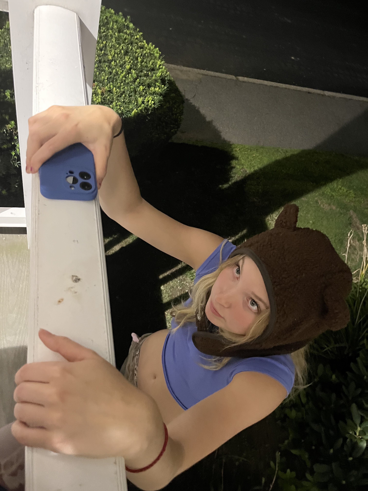

CS13 Homework 1
Welcome to my website!
This webpage is going to be about my friend
Nieve.

I met Nieve two years ago, and she has somehow become one of my best friends! She is a very multifacited person who explores all her passions:
music, food, and her sport -- SQUASH!
Together, we eat a lot of food, listen and play a lot of music, and fool around.
SQUASH


Nieve is plays squash for the Tufts D1 Varsity team. Sometimes she is on Tufts marketing pamphlets or advertisements!
THE RAGE CAGE
In the fall of 2021, Nieve and I started a radio show for the on campus radio WMFO 91.5 FM Tufts Freeform Radio. Joining the radio with her was a transformative experience that allowed our friendship to bloom in unexpected ways. At first glance, it seemed like we had vastly different music tastes. However, what emerged from this musical dichotomy was a beautiful symphony of shared experiences and evolving preferences. Collaborating on the radio show allowed us to influence each other's musical inclinations. As our playlists blended harmoniously and our on-air banter became more seamless, it was evident that our friendship was thriving on this newfound bond. Through the radio, we discovered the beauty of diversity in tastes and how it could enrich our shared moments, creating a lasting connection that went beyond the airwaves.